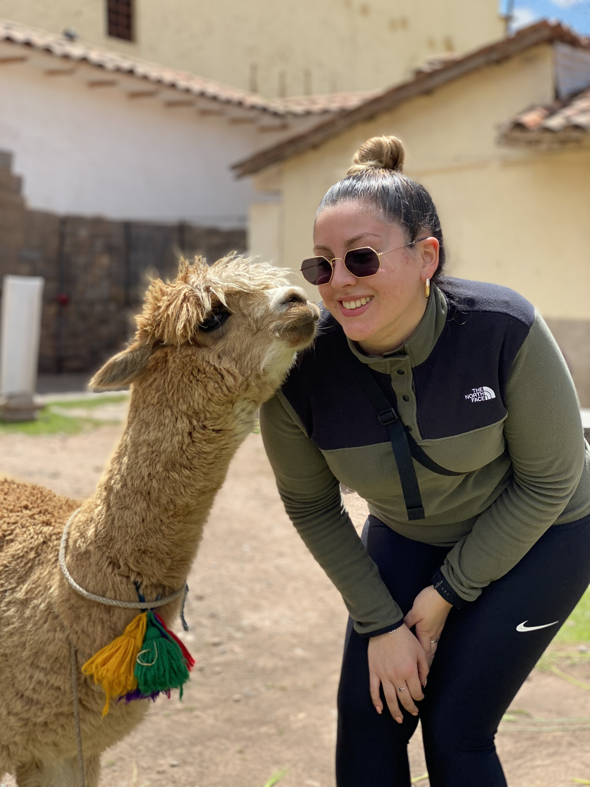

En av mina favorit destinationer är Peru där vi hittar en fantastiskt kultur från kusten till djungeln till bergen, och även lite öken. Jag började min resa genom att landa i Lima som ligger i kuset och där efter tog jag mig till Cusco som en gång i tiden var hjärtat till Inkaimperiet.

Efter att ha landat i Cusco så strutsade vi runt lite på stan där jag möttes av ett trevligt djur. I Cusco kommer du mötas av en massa alpacor och det är viktigt att man inte faller för turistfällorna. Bra att veta är att om man vill ta bild med dessa djur så ska man absolut inte ta bilder med bebisarna som har tagits ifrån deras moder.
